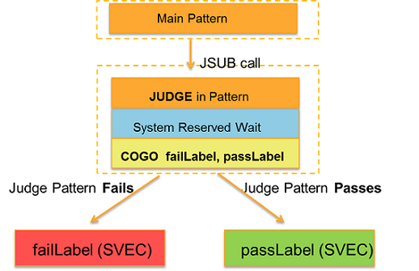
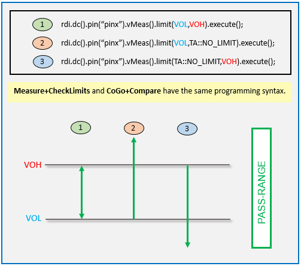
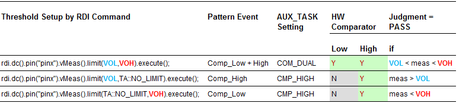
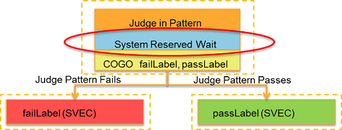

SmartRDI: Pattern-based conditional jump - cogo
SmartRDI provides the cogo() class and related functions for pattern
judgment and searching.
Cogo introduction
The cogo() class has the name from
"conditional go". This class provides the functions for specifying and executing conditional
jump into different labels to judge pattern‑based on pass/fail. The cogo()
class can also execute a binary or linear search based on pattern. The following diagram gives
an overview of the operation of the cogo() class.

cogo() class has the following functions:| Function | Description | Mode |
|---|---|---|
| failNode() | Specify the name of the node to go if the result of the cogo() judgment is fail. | P |
| init() | Specify a value between the start() and stop()
values as the start point of a binary search. |
P |
| node() | Specify a node ID and a node type. | P |
| passNode() | Specify the name of the node to go if the result of the cogo() judgment is pass. | P |
| pathPin() | Specify a digital pin to be a channel for retrieving the search path of a search. | P |
| resolution() | Specify a value that represents the resolution between steps in cogo searches. | P |
| search() | Specify a search type. | P |
| searchInput() | Specify a value to search. | P |
| start() | Set the start limit of a search range. | P |
| step() | Specify how many steps that a binary or linear search goes into the pattern. | P |
| stop() | Set the stop limit of a search range. | P |
| wait() | Specify a system wait time that occurs after pass or fail judgment. | C |
| getSearchFallResult() | Retrieve the search result from a falling hysteresis linear search. | N/A |
| getSearchPath() | Retrieve the search path with the pass/fail results for all the nodes in the path. | N/A |
| getSearchResult() | Retrieve the search result from the final node. | N/A |
| getSearchRiseResult() | Retrieve the search result from a rising hysteresis linear search. | N/A |
In the Mode column: C = Code-based, P = Pattern-based.
Judgment in cogo
The following code snippet is an example of how the
cogo() class to judge a pattern pass or fail.
RDI_BEGIN();
{
rdi.cogo().node("this").passNode("id1").failNode("id2").begin();
{
rdi.func().label("abc").execute(); // Pass or fail judgment
}
rdi.cogo().node().end();
}
RDI_END();The example above utilizes optional pairs of curly brackets "{" and "}" for the
RDI_BEGIN()/RDI_END() block and for the block that is enclosed by
rdi.cogo()...begin() and rdi.cogo()...end(). These optional
curly brackets enclose the complete code within the blocks and are used for simplifying the
correct indentation with assistance of the related Eclipse tool.
The judgment command
inside rdi.cogo().node().begin()/end() must be a command with a pass or fail
result.
Some suitable commands that return pass or fail include:
rdi.func().label("abc").execute();rdi.smartVec()...expectData()/expectBit().execute();rdi.dc()...limit(low,high).execute();for PPMU and DC Scales pins. Refer to DC Scale hardware support for cogo pass/fail judgment for more information.Note In cogo judgment, all oflimit(low,high),limit(TA::NO_LIMIT,high)andlimit(low,TA::NO_LIMIT)support AVI64 cards. Butlimit(low,high)does not work with other DC Scale cards while bothlimit(TA::NO_LIMIT,high)andlimit(low,TA::NO_LIMIT)support other DC Scale cards.Note valueMode(TA::SA) is used for cogo judgment. valueMode(TA::BADC) is used for measuring results inside cogo blocks but cannot be used for judgment.Note When dc() and limit() work together in a cogo block, they can only provide pass/fail results and cannot provide value results.Note For digital dc, limit() must work together with iForce()/vForce(); otherwise limits will not be applied for cogo judgment.
DC Scale hardware support for cogo pass/fail judgment
The following table shows a list of DC scale cards with pin type support for the pattern pass/fail judgment for cogo.
Card
|
Pin Type |
Judgment in pattern |
|
|---|---|---|---|
Voltage |
Current |
||
PS1600 |
PPMU |
Y |
Y |
BADC |
N |
N |
|
DPS128 HC |
SIG |
Y |
Y |
DPS |
Y |
Y |
|
Pattern pass-range
The pattern-measurement's pass-range and fail-range are dependent on the limit settings, as illustrated by the following figure and table.

Mapping of SW Settings - Pattern Events - HW Comparator

System-reserved waiting in cogo
The system needs a waiting time to make the judgment. This waiting time lies between the judgment pattern and the jump at the end of the cogo execution. This waiting time is not a fixed value and it depends on its environment.

You can put your own rdi.wait() function before
cogo().node().end(). If you use rdi.cogo().wait(double) in
your code, SmartRDI can check whether this waiting time is long enough for the system-reserved
waiting.
Example:
rdi.cogo().node("this").passNode("id1").failNode("id2").begin();
... // Pass or fail judgment.
rdi.cogo().wait(100 us); // SmartRDI checks whether this time is long enough or not.
rdi.cogo().node().end();Important rules
Below are some important rules you need to follow, in order to achieve a successful usage of the COGO feature:
- If there is a DC value measurement inside a "free cogo branching" or "linear search", the
result and ID mapping will not work after the COGO block because the number of measurements is
unpredictable, but the user is still able to use
getBurstValue(pin)to retrieve all DC measurement results of this pin. - The awg(), dgt(), rfs(),
rfm() and digCap() classes cannot be put into a
cogo()...begin()/cogo()...end()block, nor acogo()...blockBegin()/cogo()...blockEnd()block. - Because neither COGO execution time nor cycle number is predictable, a
portSync()function that follows acogo()command within oneRDI_BEGIN()/RDI_END()block may not work. - Use
rdi.cogo().wait(double)for the judgment latency. - In a COGO block, NO additional DCS (DPS/SIG) measurements are allowed on the same port, or on different ports with the same sequencing group. Otherwise it would corrupt the pass/fail judgment. However, additional PPMU/BADC measurements are supported inside a COGO block.
- COGO supports only one port in the COGO structure.
- Only one Binary Search COGO structure is supported within one
RDI_BEGIN()/RDI_END()block. For other COGO structures there is no such limitation. - You must set the global and the local (test suite) Site Match flags to ON.
- If the Fast Sync is used (ON), you need to set the Site Match flag to OFF.
- For Linear Search
- the
.start()input -> FAIL judgment - the
.stop()input -> PASS judgment
- the
- For Binary Search
- the
.start()input -> PASS judgment - the
.stop()input -> FAIL judgment
- the
- pathPin() must not receive any signal from the DUT board.
- If pathPin() is not used, an RDI_BEGIN/RDI_END block can have one cogo search block only.
- A DUT board calibration might be required to ensure correct functionality of the path pin at higher pattern speeds, for example, a cycle time greater than 50 MHz.
- Except for the dc result retrieved by getBurstValue(), all types of measurements inside a cogo block cannot provide ID-based values due to the cogo's execution number is not predictable.
Functional changes
- Introduced in SmartRDI 2.4.0
- SmartRDI 2.4.1: The cogo judgment supports DC Scale cards.